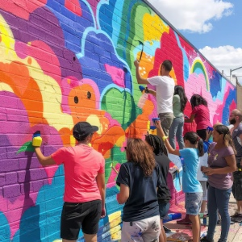

Bringing Creativity and Community Together
Welcome to "Name", where creativity meets community.
We believe that public art has the power to transform ordinary spaces into meaningful places that inspire, connect, and bring joy to everyone.
"Name" is a community-focused organization dedicated to bringing art into public spaces through creative installations, local partnerships, and community participation.
Whether you are an artist, a community member, or someone who simply appreciates art, there is a place for you here.
Let's create something meaningful together!
DiscoveringOur Services
Why we are matters?
Art can do more than decorate a wall or fill an empty space.
It can create meaningful connections between people.
Community art helps:
- Build connections: Bring people together.
- Encourage creativity: Give people opportunities to express themselves.
- Celebrate diversity: Share different cultures, stories, and perspectives.
- Improve public spaces: Make neighborhoods more welcoming and attractive.
- Support local talent: Give artists opportunities to share their work.
Everyone Has a Place in Art
You don't need to be a professional artist to become part of our creative community.
We welcome individuals, families, students, local artists, businesses, and community organizations who want to support creativity.
There are many ways to participate, from volunteering and sharing ideas to joining collaborative art activities.
Your creativity can make a difference!
Become Part of Our Community